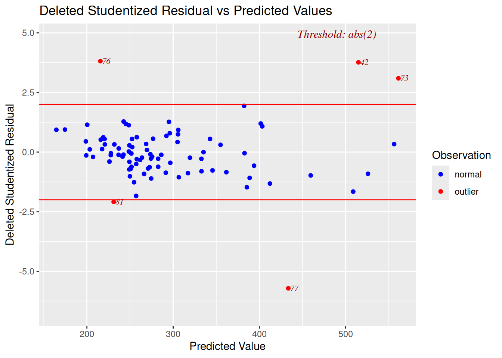
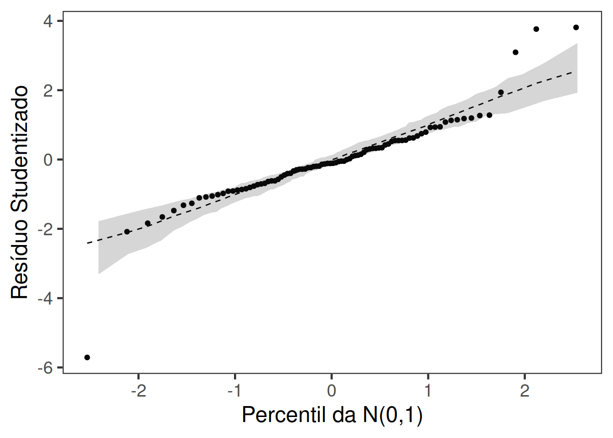

Outliers: definido como uma observação que possui um grande resíduo. Em outras palavras, o valor observado para o ponto e muito diferente do predito pelo modelo de regressão.
Pontos de Alavanca: definidos como uma observação que tem um valor de \(x\) que está longe da média de \(x\). A eliminação do mesmo não necessariamente afeta a reta de regressão.
Observações influentes: definidas como uma observação que altera a inclinação da reta. Desta forma, observações influentes têm uma grande influência no ajuste do modelo. Um método para verificar se o ponto é influente é comparar o ajuste do modelo com e sem cada observação.
Com o objetivo de detectarmos os pontos de alavanca, podemos construir um gráfico de índices para \(h_{ii}\) (definido no slide 15 da semana 9). No próximo slide mostraremos como fazer isso usando o R.
library(wooldridge)library(olsrr)
Anexando pacote: 'olsrr'
O seguinte objeto é mascarado por 'package:wooldridge':
cement
O seguinte objeto é mascarado por 'package:datasets':
rivers
── Conflicts ────────────────────────────────────────── tidyverse_conflicts() ──
✖ dplyr::filter() masks stats::filter()
✖ dplyr::lag() masks stats::lag()
ℹ Use the conflicted package (<http://conflicted.r-lib.org/>) to force all conflicts to become errors
Quando o \(i\)-ésimo ponto é excluído, a distancia de Cook é dada por \[D_i = \frac{t_i^2}{p}\frac{h_{ii}}{(1 - h_{ii})},\]
em que \(t_i\) é o resíduo studentizado. Com a função ols_cooksd_chart() do pacote {olsrr} é possível identificar as observações potencialmente influentes.
No pacote olsrr também existe uma função para a construção de gráficos de resíduos. Iremos utilizar a função ols_plot_resid_stud_fit().
ols_plot_resid_stud_fit(fit)

Para a construção do gráfico normal de probabilidade você pode usar a função envelope_normal() abaixo.

5.2 Análise confirmatória
Nos slides anteriores o ponto #77 aparece como alavanca, influente e aberrante (outlier). Na análise confirmatória abaixo podemos observar que temos uma grande variação nas estimativas dos parâmetros com a eliminação desta observação. Além disso, temos indícios de heterocedasticidade. Também observamos no gráfico normal de probabilidade para o modelo normal linear que o mesmo não consegue acomodar bem os pontos dentro do envelope.
summary(fit)
Call:
lm(formula = price ~ lotsize + sqrft + bdrms, data = hprice1)
Residuals:
Min 1Q Median 3Q Max
-120.026 -38.530 -6.555 32.323 209.376
Coefficients:
Estimate Std. Error t value Pr(>|t|)
(Intercept) -2.177e+01 2.948e+01 -0.739 0.46221
lotsize 2.068e-03 6.421e-04 3.220 0.00182 **
sqrft 1.228e-01 1.324e-02 9.275 1.66e-14 ***
bdrms 1.385e+01 9.010e+00 1.537 0.12795
---
Signif. codes: 0 '***' 0.001 '**' 0.01 '*' 0.05 '.' 0.1 ' ' 1
Residual standard error: 59.83 on 84 degrees of freedom
Multiple R-squared: 0.6724, Adjusted R-squared: 0.6607
F-statistic: 57.46 on 3 and 84 DF, p-value: < 2.2e-16